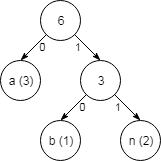

Licenca
To delo je na voljo pod pogoji slovenske licence Creative Commons 2.5:
priznanje avtorstva - nekomercialno - deljenje pod enakimi pogoji.
Celotna licenca je na voljo na spletu na naslovu http://creativecommons.org/licenses/by-nc-sa/2.5/si/. V skladu s to licenco je dovoljeno vsakemu uporabniku delo razmnoževati, distribuirati, javno priobčevati, dajati v najem in tudi predelovati, vendar samo v nekomercialne namene in ob pogoju, da navede avtorja oziroma avtorje in izdajatelja tega dela. Če uporabnik delo predela, kar pomeni, da ga spremeni, preoblikuje, prevede ali uporabi to delo v svojem delu, lahko predelavo dela ponudi na voljo le pod pogoji, ki so enaki pogojem iz te licence oziroma pod enako licenco.

Naloge
1
S pomočjo standarda ASCII:
- Predstavi niz »znanost«.
- Predstavi niz »Ljubljana« (ne pozabi, da se ta niz začne z veliko začetnico »L«).
- Predstavi niz »358« (ne pozabi, da gre za tri znake, čeprav izgledajo kot številka).
- Predstavi niz »Zdravo, kako si?« (v ASCII tabeli poišči kode za vejico, presledek in vprašaj).
2
Koliko je pravzaprav 32 bitov?
- Katero je največje število, ki ga lahko predstavimo z 32 biti? Odgovor naj bo v desetiški in v dvojiški obliki.
- Največje število, ki predstavlja določen znak Unicode, je število $00000000\ 00010000\ 11111111\ 11111111$ in ni največje možno 32-bitno število. Kakšna je destiška vrednost tega števila?
- Kolikšno bi bilo najmanjše število bitov, ki bi jih potrebovali za predstavitev poljubnega znaka Unicode, glede na to, da trenutno obstaja približno 120.000 znakov Unicode?
3
Koliko bitov potrebujemo za predstavitev besede »banana« v nestisnjeni obliki in koliko bitov, če to besedo stisnemo s Huffmanovim kodiranjem?
Pomagaj si s Huffmanovim drevesom.
4
Huffmanova koda $01001101011010100100110$ vsebuje naslednje znake: $d(1)$, $k(1)$, $b(2)$, $r(2)$ in $a(5)$. S pomočjo znanja o Huffmanovem kodiranju odkrij skrivno besedo.
5
Huffmanova koda $11100010011010111000$ vsebuje naslednje znake: $j(1)$, $n(1)$, $d(2)$, $p(2)$ in $e(3)$. S pomočjo znanja o Huffmanovem kodiranju odkrij skrivno besedo.